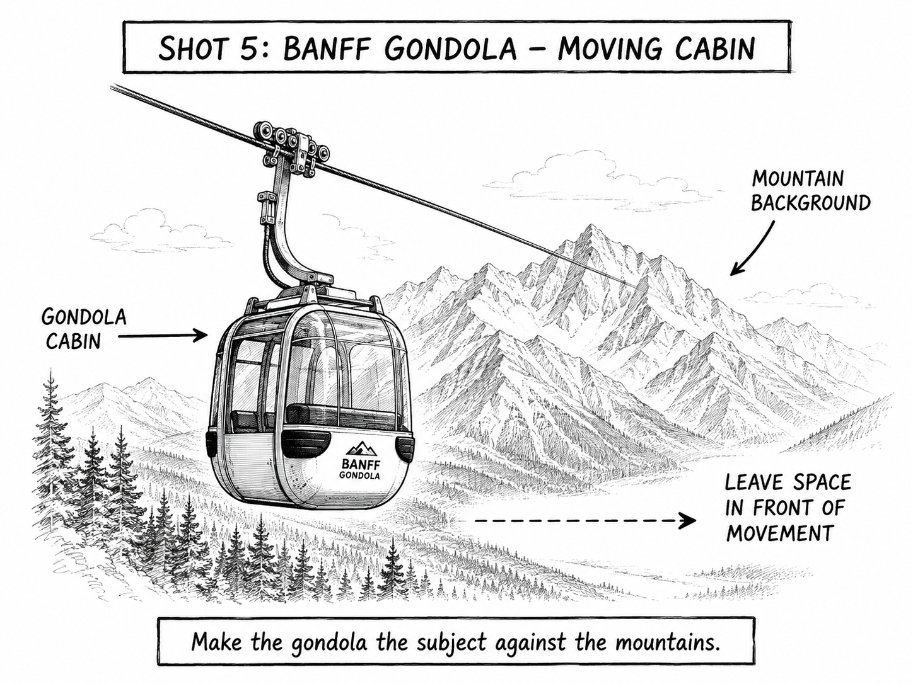

Primary real example
GondolaBanff.com
Banff Gondola cabin against mountain scenery.
Open the original exampleShot 05 | Day 5 | September 21 | Banff
Reference links for this shot.

These examples stay on their original sites. No photographer images are copied into this guide.
Primary real example
Banff Gondola cabin against mountain scenery.
Open the original example